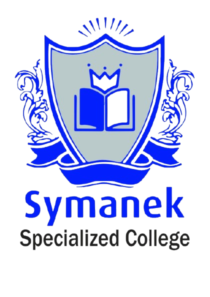

The website and online applications are live on symanekacademy.com. The Suite is secure, loaded with the college's data, and the lecturer/student tools passed a full end-to-end test.
One lecturer and 3–5 students use the portal for about 5 days, then tell us what to improve. Guide: “Pilot Test Guide” (PDF).
The 5 pilot answers · emails of 4 lecturers · who teaches Nutrition & Dietetics · EduCIMS export and decisions · letterhead and signature for official letters.
| Stage | What it includes | Status | |
|---|---|---|---|
| 1 | Public website & online applications | New website on symanekacademy.com; online application with documents and school results; approval letter; upload of proof of payment (EFT). | Done |
| 2 | Secure system | Cloud database; personal logins with a forced password change; each role sees only its own area; a lecturer sees only their own modules and students. | Done |
| 3 | College data loaded | Programmes and 173 modules; 117 students; 11 staff; 142 modules already linked to their lecturer. | Done |
| 4 | Classroom tools | Attendance (80% rule), class notices, study materials, assignments with file upload, marks and feedback, questions to the lecturer, provisional marks. Admin: add students and lecturers, give access, enrol a whole class. Tested end to end. | Done |
| 5 | Pilot with one class | 1 lecturer, 3–5 students and the school administrator use the Suite for about 5 days and complete a short feedback form. | Now |
| 6 | Launch to everyone | Improvements from the pilot; enrol the 2026 classes on their modules; logins for all lecturers and students. | Next |
| 7 | Replace EduCIMS | Bring over student history and results; office payments, receipts, statements, instalments and memos; assessment rules per module; official PDFs (letters, transcripts, certificates). | Later |
| 8 | Extras | Automatic email / WhatsApp notifications; the optional modules the college chooses (accommodation, library, canteen, HR & payroll, timetables). | Later |